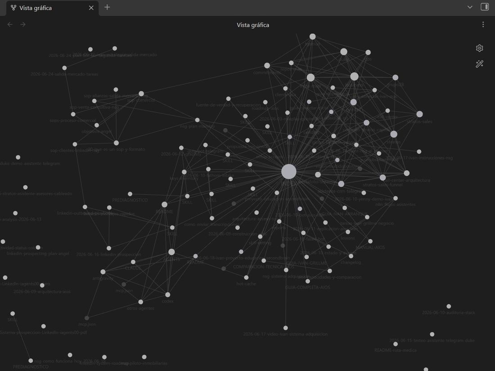

Segundos Cerebros con IA
Memoria perfecta y operación clara para empresas, agencias y freelances.
El problema
Proyectos, clientes, procesos y lecciones quedan regados entre apps, chats y documentos. Con cada cliente nuevo o cambio de equipo se reinventa la rueda y se pierde contexto —y plata—.
La solución
Un segundo cerebro digital que captura, organiza y conecta todo el conocimiento del negocio en un solo lugar vivo, accesible por lenguaje natural desde el celular o el PC, y que además ayuda a operar el día a día.
El impacto
Claridad total y memoria perfecta: onboarding inmediato, decisiones más rápidas, nada se pierde y cada persona rinde como si tuviera un asistente que se sabe todo el negocio.

segundo cerebro · vista de conocimiento